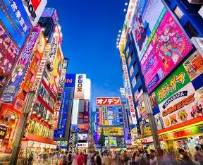
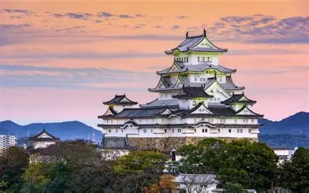
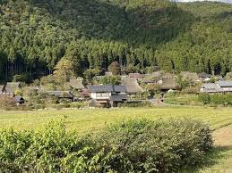
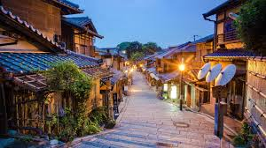

Japão é frequentemente reconhecido como um dos países mais seguros do mundo. A baixa taxa de criminalidade, o forte senso de coletividade da população e a eficiência das instituições públicas contribuem para essa reputação internacional.
O Japão é um dos destinos turísticos mais fascinantes do mundo, pois reúne tradição, tecnologia e uma cultura extremamente rica. O país oferece diversas atividades para turistas e moradores, agradando pessoas de diferentes estilos e interesses. Uma das principais atrações do Japão é a possibilidade de conhecer sua cultura tradicional. Cidades como Kyoto possuem templos, santuários e jardins históricos que mostram a beleza e a história japonesa. Além disso, muitos visitantes participam de cerimônias do chá e utilizam roupas típicas, como os quimonos.
Uma das tradições mais conhecidas é a cerimônia do chá, um ritual realizado com muita calma e organização. Essa prática representa harmonia, respeito e tranquilidade, sendo considerada uma arte tradicional japonesa. Além disso, o uso do quimono em festivais, casamentos e eventos especiais também faz parte da cultura do país.Os festivais tradicionais, chamados de “matsuri”, são outra importante tradição japonesa. Durante essas celebrações, as ruas ficam decoradas com lanternas, músicas e apresentações culturais.

Castelo Hijemi

Floresta Keihoko

Vila Kyoto
Um dos setores mais avançados do Japão é o da robótica. Empresas japonesas desenvolveram robôs capazes de auxiliar em fábricas, hospitais e até no atendimento ao público. Esses robôs possuem inteligência artificial e sensores sofisticados, permitindo realizar tarefas com alta precisão. Em um país com população envelhecida, a tecnologia também é usada para ajudar idosos em atividades do dia a dia..
A cultura médica do Japão é reconhecida pela combinação entre tecnologia avançada, disciplina social e forte valorização da prevenção. O sistema de saúde japonês é considerado um dos mais eficientes do mundo, oferecendo atendimento de qualidade e contribuindo para a alta expectativa de vida da população. Um dos principais aspectos da medicina japonesa é a importância dada à prevenção de doenças. Exames de rotina, campanhas de vacinação e hábitos saudáveis fazem parte da vida dos japoneses desde cedo. Muitas empresas e escolas incentivam check-ups periódicos para identificar problemas de saúde antes que se tornem gravees.
A cultura geek no Japão é uma das mais influentes e populares do mundo. O país se tornou referência global em animes, mangás, videogames e tecnologia, criando uma identidade cultural única que atrai milhões de fãs de diferentes países.Os animes e mangás são os maiores símbolos da cultura geek japonesa. Séries famosas conquistaram públicos de todas as idades e ajudaram a expandir a influência da cultura japonesa internacionalmente. No Japão, é comum encontrar lojas especializadas, cafés temáticos e grandes eventos dedicados a personagens e obras famosas.
Por que viajar para França